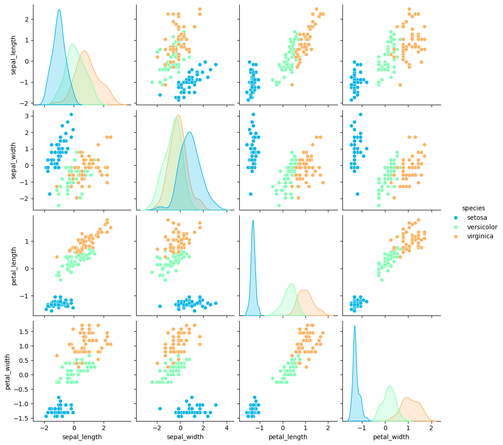
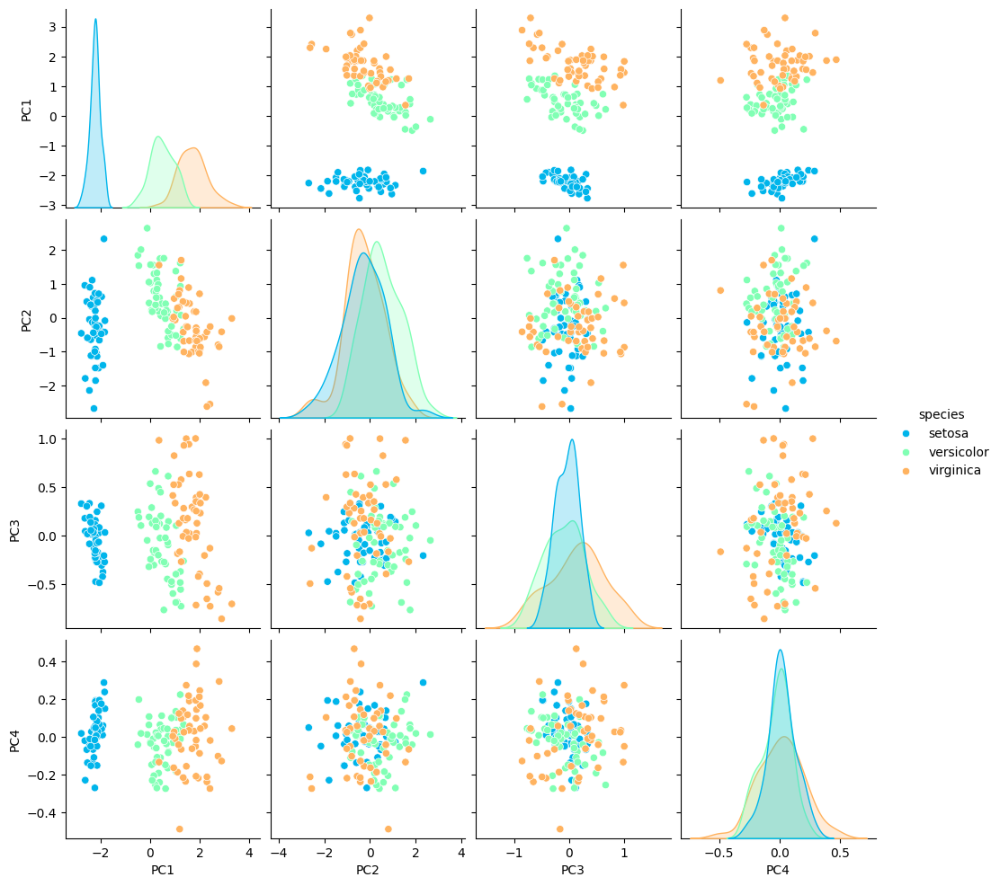
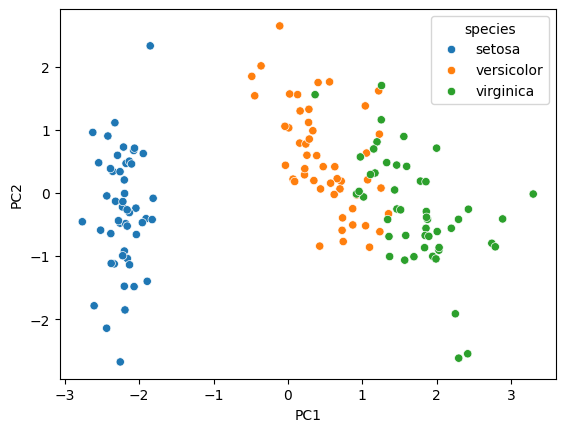
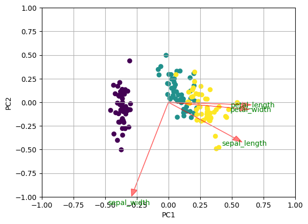

Antes de comenzar
En caso de identificar errores en la documentación, en la resolución, implementación u otro, o si quieres proponer una solución más elegante a las problemáticas propuestas, escríbeme a vosores@ucm.cl
Material
- Números complejos.
- Matrices (slides).
- Sistemas de ecuaciones lineales (slides).
- Vectores en $\mathbb{R}^n$ (slides).
- Valores y vectores propios de matrices (slides).
- Espacios vectoriales (slides).
- Transformaciones lineales (slides).
Desafio 1:
El archivo circulo.csv contiene valores medidos $x_i$ e $y_i$ (en un sistema de coordenadas rectangulares) del plano de una pieza mecánica circular.
(a) Determine el radio de la pieza a partir de esas mediciones.
(b) Dibuje en un mismo gráfico los valores medidos y la circunferencia obtenida.
Sugerencia: Sean $r$ el radio de la circunferencia y $(a, b)$ las coordenadas de su centro, ambos a determinar. Para cada punto $\left(x_i, y_i\right)$ de la circunferencia se tiene que $$ \left(x_i-a\right)^2+\left(y_i-b\right)^2=r^2 $$ y, por lo tanto, $$ 2 x_i a+2 y_i b+\left(r^2-a^2-b^2\right)=x_i^2+y_i^2 . $$ Sea $c=\left(r^2-a^2-b^2\right)$. Se trata de determinar los valores de $a, b$ y $c$ que resuelven el problema en el sentido de los cuadrados mínimos.
(a) Determine el radio de la pieza a partir de esas mediciones.
(b) Dibuje en un mismo gráfico los valores medidos y la circunferencia obtenida.
Sugerencia: Sean $r$ el radio de la circunferencia y $(a, b)$ las coordenadas de su centro, ambos a determinar. Para cada punto $\left(x_i, y_i\right)$ de la circunferencia se tiene que $$ \left(x_i-a\right)^2+\left(y_i-b\right)^2=r^2 $$ y, por lo tanto, $$ 2 x_i a+2 y_i b+\left(r^2-a^2-b^2\right)=x_i^2+y_i^2 . $$ Sea $c=\left(r^2-a^2-b^2\right)$. Se trata de determinar los valores de $a, b$ y $c$ que resuelven el problema en el sentido de los cuadrados mínimos.
# Use las siguientes lineas para visualizar la información
import pandas as pd
df = pd.read_csv("https://victorosores.github.io/files/circulo.csv")
x = np.array(df.x)
y = np.array(df.y)
plt.plot(x,y,'*')
plt.axis('equal')
Aplicación de vectores y valores propios de una matriz
Análisis de componentes principales
El análisis de componentes principales (PCA, del inglés principal component analysis) es un método simple y no paramétrico para extraer información relevante de conjuntos de datos que pueden ser confusos. Además, puede servir para dar argumentos o indicaciones sobre cómo reducir la dimensión de un conjunto complejo de datos y así revelar posibles estructuras escondidas o características interesantes.
Consideremos el siguiente ejemplo para ilustrar el PCA. Usaremos el set de datos llamado "Iris" el cuál proporciona las medidas en centímetros de las siguientes variables: Longitud del sépalo de una flor, anchura del sépalo de una flor, longitud del pétalo de una flor y anchura del pétalo de una flor, respectivamente. Lo anterior para cincuenta flores de las especies Iris setosa, Iris versicolor e Iris virginica.
Los datos fueron recopilados por Edgar Anderson en el año 1935 y publicados en el artículo "The irises of the Gaspe Peninsula", Bulletin of the American Iris Society, 59, págs. 2-5.
Consideremos el siguiente ejemplo para ilustrar el PCA. Usaremos el set de datos llamado "Iris" el cuál proporciona las medidas en centímetros de las siguientes variables: Longitud del sépalo de una flor, anchura del sépalo de una flor, longitud del pétalo de una flor y anchura del pétalo de una flor, respectivamente. Lo anterior para cincuenta flores de las especies Iris setosa, Iris versicolor e Iris virginica.
Los datos fueron recopilados por Edgar Anderson en el año 1935 y publicados en el artículo "The irises of the Gaspe Peninsula", Bulletin of the American Iris Society, 59, págs. 2-5.
Tabla 1. Datos iris: Longitud y anchura del sépalo y longitud y anchura del pétalo (en centímetros)
sepal_length sepal_width petal_length petal_width species
0 5.1 3.5 1.4 0.2 setosa
1 4.9 3.0 1.4 0.2 setosa
2 4.7 3.2 1.3 0.2 setosa
3 4.6 3.1 1.5 0.2 setosa
4 5.0 3.6 1.4 0.2 setosa
.. ... ... ... ... ...
145 6.7 3.0 5.2 2.3 virginica
146 6.3 2.5 5.0 1.9 virginica
147 6.5 3.0 5.2 2.0 virginica
148 6.2 3.4 5.4 2.3 virginica
149 5.9 3.0 5.1 1.8 virginica
[150 rows x 5 columns]
En un caso general, podemos considerar que hay que medir $m$ variables de un total de $n$ elementos o experimentos y organizar toda esta información en una matriz $\mathbf{X}$ de $n$ filas y $m$ columnas:
$$
\mathbf{X}=\left[\begin{array}{cccccc}
x_{11} & x_{12} & \cdots & x_{1 j} & \cdots & x_{1 m} \\
\vdots & \vdots & \ddots & \vdots & \ddots & \vdots \\
x_{i 1} & x_{i 2} & \cdots & x_{i j} & \cdots & x_{i m} \\
\vdots & \vdots & \ddots & \vdots & \ddots & \vdots \\
x_{n 1} & x_{n 2} & \cdots & x_{n j} & \cdots & x_{n m}
\end{array}\right] \in \mathcal{M}_{n \times m}(\mathbb{R}).
$$
El $i$-ésimo vector fila de la matriz $\mathbf{X}$ viene dado por
$$
x_{i}^{T}=\left[\begin{array}{llllll}
x_{i 1} & x_{i 2} & \cdots & x_{i j} & \cdots & x_{i m}
\end{array}\right]
$$
y representa los valores de todas las variables para uno de los elementos de la muestra (para una flor), mientras que el $j$-ésimo vector columna de $\mathbf{X}$
$$
v_{j}=\left[\begin{array}{c}
x_{1 j} \\
\vdots \\
x_{i j} \\
\vdots \\
x_{n j}
\end{array}\right],
$$
representa el valor de la $j$-ésima variable para todos los elementos de la muestra.
En el caso de nuestro ejemplo,
$$
x_{1}^{T}=\left[\begin{array}{llll}
5.1 & 3.5 & 1.4 & 0.2
\end{array}\right]\text{ y }
x_{4}^{T}=\left[\begin{array}{llll}
4.6 & 3.1 & 1.5 & 0.2
\end{array}\right],
$$
mientras que
$$
v_{1}=\left[\begin{array}{c}
5.1\\
4.9\\
4.7\\
4.6\\
5.0\\
\cdots\\
6.7\\
6.3\\
6.5\\
6.2\\
5.9
\end{array}\right] \text{ y }
v_{4}=\left[\begin{array}{c}
0.2\\
0.2\\
0.2\\
0.2\\
0.2\\
\cdots\\
2.3\\
1.9\\
2.0\\
2.3\\
1.8
\end{array}\right].
$$
Preprocesamiento
Dado que las variables pueden tener diferentes escalas y magnitudes, hay que aplicar a la matriz de datos un preproceso para escalar las variables, de forma que todas tengan de media 0 y de desviación típica 1.
Denominamos $\mu_{j}$ a la media aritmética de la variable $j$-ésima, que se define así: $$ \mu_{j}=\frac{1}{n} \sum_{i=1}^{n} x_{i j}=\frac{x_{1 j}+x_{2 j}+\cdots+x_{n j}}{n}. $$ Del mismo modo, denominamos $\sigma_{j}^{2}$ a la varianza de la variable $j$-ésima, que se define así: $$ \sigma_{j}^{2}=\frac{1}{n-1} \sum_{i=1}^{n}\left(x_{i j}-\mu_{j}\right)^{2}=\frac{\left(x_{1 j}-\mu_{j}\right)^{2}+\left(x_{2 j}-\mu_{j}\right)^{2}+\cdots+\left(x_{n j}-\mu_{j}\right)^{2}}{n-1}. $$ Finalmente, cada elemento de la matriz $\mathbf{X}$ se normaliza de la manera siguiente: $$ \check{x}_{i j}:=\frac{x_{i j}-\mu_{j}}{\sigma_{j}}, i=1, \ldots, n, j=1, \ldots, m. $$ Una matriz en la que las columnas tienen media cero se llama matriz centrada.
En nuestro ejemplo, la media y la varianza de cada una de las columnas de la matriz vienen dados por:
Denominamos $\mu_{j}$ a la media aritmética de la variable $j$-ésima, que se define así: $$ \mu_{j}=\frac{1}{n} \sum_{i=1}^{n} x_{i j}=\frac{x_{1 j}+x_{2 j}+\cdots+x_{n j}}{n}. $$ Del mismo modo, denominamos $\sigma_{j}^{2}$ a la varianza de la variable $j$-ésima, que se define así: $$ \sigma_{j}^{2}=\frac{1}{n-1} \sum_{i=1}^{n}\left(x_{i j}-\mu_{j}\right)^{2}=\frac{\left(x_{1 j}-\mu_{j}\right)^{2}+\left(x_{2 j}-\mu_{j}\right)^{2}+\cdots+\left(x_{n j}-\mu_{j}\right)^{2}}{n-1}. $$ Finalmente, cada elemento de la matriz $\mathbf{X}$ se normaliza de la manera siguiente: $$ \check{x}_{i j}:=\frac{x_{i j}-\mu_{j}}{\sigma_{j}}, i=1, \ldots, n, j=1, \ldots, m. $$ Una matriz en la que las columnas tienen media cero se llama matriz centrada.
En nuestro ejemplo, la media y la varianza de cada una de las columnas de la matriz vienen dados por:
Promedios por columna:
sepal_length 5.843333
sepal_width 3.057333
petal_length 3.758000
petal_width 1.199333
dtype: float64
Varianza por columna:
sepal_length 0.685694
sepal_width 0.189979
petal_length 3.116278
petal_width 0.581006
dtype: float64
Por lo tanto, al normalizar los datos de la matriz se obtiene la matriz normalizada
sepal_length sepal_width petal_length petal_width
0 -0.897674 1.015602 -1.335752 -1.311052
1 -1.139200 -0.131539 -1.335752 -1.311052
2 -1.380727 0.327318 -1.392399 -1.311052
3 -1.501490 0.097889 -1.279104 -1.311052
4 -1.018437 1.245030 -1.335752 -1.311052
.. ... ... ... ...
145 1.034539 -0.131539 0.816859 1.443994
146 0.551486 -1.278680 0.703564 0.919223
147 0.793012 -0.131539 0.816859 1.050416
148 0.430722 0.786174 0.930154 1.443994
149 0.068433 -0.131539 0.760211 0.788031
[150 rows x 4 columns]
Diagrama de dispersión
Un diagrama de dispersión (en inglés, scatter plot) muestra gráficamente la relación entre dos variables cuantitativas. Los colores representan el tipo o especie de flor: setosa (azul), versicolor (verde) y virginica (naranjo).
# Diagrama de dispersión
sns.pairplot(pd.concat([XX, Y], axis=1),hue='species',palette='rainbow')

Matriz de covarianzas
Dada la matriz (normalizada)
$$
\begin{aligned}
\mathbf{X} & =\left[\begin{array}{cccccc}
x_{11} & x_{12} & \cdots & x_{1 j} & \cdots & x_{1 m} \\
\vdots & \vdots & \ddots & \vdots & \ddots & \vdots \\
x_{i 1} & x_{i 2} & \cdots & x_{i j} & \cdots & x_{i m} \\
\vdots & \vdots & \ddots & \vdots & \ddots & \vdots \\
x_{n 1} & x_{n 2} & \cdots & x_{n j} & \cdots & x_{n m}
\end{array}\right] \in \mathcal{M}_{n \times m}(\mathbb{R})\\
& =\left[\begin{array}{cccccc}
v_{1} & v_{2} & \cdots & v_{j} & \cdots & v_{m}
\end{array}\right]
\end{aligned}
$$
la matriz de covarianzas (matriz cuadrada) se define como:
$$
\mathbf{C}_{\mathbf{X}}=\frac{1}{n-1} \mathbf{X}^{T} \mathbf{X}=\frac{1}{n-1}\left[\begin{array}{cccccc}
v_{1}^{T} v_{1} & v_{1}^{T} v_{2} & \cdots & v_{1}^{T} v_{j} & \cdots & v_{1}^{T} v_{m} \\
\vdots & \vdots & \ddots & \vdots & \ddots & \vdots \\
v_{j}^{T} v_{1} & v_{j}^{T} v_{2} & \cdots & v_{j}^{T} v_{j} & \cdots & v_{j}^{T} v_{m} \\
\vdots & \vdots & \ddots & \vdots & \ddots & \vdots \\
v_{m}^{T} v_{1} & v_{m}^{T} v_{2} & \cdots & v_{m}^{T} v_{j} & \cdots & v_{m}^{T} v_{m}
\end{array}\right] \in \mathcal{M}_{m \times m}(\mathbb{R}),
$$
y mide el grado de relación lineal del conjunto de datos entre cada uno de los pares de variables. Los términos de la diagonal principal corresponden a la varianza de cada una de las variables:
$$
\sigma_{j}^{2}=\frac{1}{n-1} v_{j}^{T} v_{j}=\frac{1}{n-1} \sum_{i=1}^{n} x_{i j}^{2}.
$$
Dado que nuestros datos están normalizados, todos los términos de la diagonal principal son 1. Los términos que no son de la diagonal principal representan la covarianza entre cada par de variables:
$$
\sigma_{j k}^{2}=\frac{1}{n-1} v_{j}^{T} v_{k}=\frac{1}{n-1} \sum_{i=1}^{n} x_{i j} x_{i k}.
$$
En nuestro ejemplo, la matriz de covarianzas es
X = np.zeros(XX.shape)
X[:,0] = XX.sepal_length
X[:,1] = XX.sepal_width
X[:,2] = XX.petal_length
X[:,3] = XX.petal_width
print((1.0/(n_datos-1.0))*np.dot(X.T,X))
[[ 1. -0.11756978 0.87175378 0.81794113]
[-0.11756978 1. -0.4284401 -0.36612593]
[ 0.87175378 -0.4284401 1. 0.96286543]
[ 0.81794113 -0.36612593 0.96286543 1. ]]
Se tienen las siguientes observaciones:
- Los elementos de la diagonal principal son todos igual a 1. Esto es así porque nuestros datos han sido normalizados y, por lo tanto, la varianza de todos es 1.
- La matriz de covarianzas es una matriz simétrica. Esto sucede porque la covarianza es simétrica, es decir, $$ \sigma_{j k}^{2}=\sigma_{k j}^{2}. $$
- Las variables 3 y 4, correspondientes a la longitud y anchura del pétalo, están altamente relacionadas, puesto que su covarianza es $0.96286543$. Las variables 1 y 3 longitud del sépalo y del pétalo, respectivamente, también están significativamente relacionadas, a pesar de que en menor proporción, puesto que su covarianza es $0.87175378$.
- Por el contrario, las variables 1 y 2: longitud y anchura del sépalo, respectivamente, no están muy relacionadas. En efecto, su covarianza es $-0.11756978$.
Diagonalización de la matriz de covarianzas
El objetivo del análisis de componentes principales es encontrar una transformación (aplicación) lineal:
$$
\mathbf{P} \in \mathcal{M}_{m \times m}(\mathbb{R}),
$$
tal que los datos originales recogidos en $\mathbf{X}$ se transformen o se proyecten en un nuevo espacio mediante el producto:
$$
\mathbf{T}=\mathbf{X} \mathbf{P} \in \mathcal{M}_{n \times m}(\mathbb{R}),
$$
de forma que la matriz de covarianzas $\mathbf{C}_{\mathbf{T}}$ de los nuevos datos $\mathbf{T}$ sea diagonal.
Como $\mathbf{C}_\mathbf{X}$ es una matriz cuadrada y simétrica de dimensión $m \times m$, sabemos que existen $m$ valores propios $\lambda_i$ reales y $m$ vectores propios (ortonormales) $p_i$ que forman una base en el espacio vectorial euclídeo $\mathbb{R}^n$ tal que $$ \mathbf{C}_{\mathbf{X}}=\mathbf{P D P}^{T}, $$ donde $$ \begin{gathered} \mathbf{P}=\left[p_{1}\left|p_{2}\right| \ldots \mid p_{m}\right] \text{ y } \mathbf{D}=\operatorname{diag}\left(\lambda_{1}, \lambda_{2}, \ldots, \lambda_{m}\right). \end{gathered} $$ Los datos de la nueva matriz transformada $\mathbf{T}$ se calculan así: $$ \mathbf{T}=\mathbf{X} \mathbf{P} \in \mathcal{M}_{n \times m}(\mathbb{R}) $$ donde $\mathbf{P}$ es la matriz en la que las columnas son los vectores propios de la matriz de covarianzas $\mathbf{C}_{\mathbf{X}}$.
Recuerde que bajo estas condiciones $\mathbf{P}^{T}=\mathbf{P}^{-1}$.
Como $\mathbf{C}_\mathbf{X}$ es una matriz cuadrada y simétrica de dimensión $m \times m$, sabemos que existen $m$ valores propios $\lambda_i$ reales y $m$ vectores propios (ortonormales) $p_i$ que forman una base en el espacio vectorial euclídeo $\mathbb{R}^n$ tal que $$ \mathbf{C}_{\mathbf{X}}=\mathbf{P D P}^{T}, $$ donde $$ \begin{gathered} \mathbf{P}=\left[p_{1}\left|p_{2}\right| \ldots \mid p_{m}\right] \text{ y } \mathbf{D}=\operatorname{diag}\left(\lambda_{1}, \lambda_{2}, \ldots, \lambda_{m}\right). \end{gathered} $$ Los datos de la nueva matriz transformada $\mathbf{T}$ se calculan así: $$ \mathbf{T}=\mathbf{X} \mathbf{P} \in \mathcal{M}_{n \times m}(\mathbb{R}) $$ donde $\mathbf{P}$ es la matriz en la que las columnas son los vectores propios de la matriz de covarianzas $\mathbf{C}_{\mathbf{X}}$.
Recuerde que bajo estas condiciones $\mathbf{P}^{T}=\mathbf{P}^{-1}$.
Matriz de covarianzas de los datos transformados
¿Cuál es la matriz de covarianzas de los datos transformados?
$$
\begin{aligned}
\mathbf{C}_{\mathbf{T}} & =\frac{1}{n-1} \mathbf{T}^{T} \mathbf{T}\\
&=\frac{1}{n-1} \mathbf{P}^{T} \mathbf{X}^{T} \mathbf{X} \mathbf{P}\\
&=\mathbf{P}^{T} \mathbf{C}_{\mathbf{X}} \mathbf{P} \\
& =\mathbf{P}^{T} \mathbf{P} \mathbf{D} \mathbf{P}^{T} \mathbf{P}\\
&=\mathbf{D}\\
&=\operatorname{diag}\left(\lambda_{1}, \ldots, \lambda_{m}\right).
\end{aligned}
$$
Esto significa que la matriz de covarianzas de los datos transformados es diagonal. Por lo tanto, las nuevas variables están incorrelacionadas.
Es habitual ordenar los vectores propios en función del valor propio asociado, de mayor a menor. Es decir, si los valores propios son: $$ \lambda_{1} \geq \lambda_{2} \geq \cdots \geq \lambda_{m}, $$ ubicaremos los vectores propios en la matriz $\mathbf{P}$ en este orden.
Volviendo al ejemplo del conjunto de datos Iris, los valores propios y los vectores propios de la matriz de covarianzas $\mathbf{C}_{\mathbf{X}}$ son:
Es habitual ordenar los vectores propios en función del valor propio asociado, de mayor a menor. Es decir, si los valores propios son: $$ \lambda_{1} \geq \lambda_{2} \geq \cdots \geq \lambda_{m}, $$ ubicaremos los vectores propios en la matriz $\mathbf{P}$ en este orden.
Volviendo al ejemplo del conjunto de datos Iris, los valores propios y los vectores propios de la matriz de covarianzas $\mathbf{C}_{\mathbf{X}}$ son:
D,V = np.linalg.eig(Cov_X)
print('Valores propios:')
print(D)
print('Matriz de vectores propios:')
print(V)
D,V = np.linalg.eig(Cov_X)
print('Valores propios:')
print(D)
print('Matriz de vectores propios:')
print(V)
Valores propios:
[2.91849782 0.91403047 0.14675688 0.02071484]
Matriz de vectores propios:
[[ 0.52106591 -0.37741762 -0.71956635 0.26128628]
[-0.26934744 -0.92329566 0.24438178 -0.12350962]
[ 0.5804131 -0.02449161 0.14212637 -0.80144925]
[ 0.56485654 -0.06694199 0.63427274 0.52359713]]
El vector propio (los vectores propios definen las direcciones de las componentes principales en el espacio de las variables originales) asociado al valor propio (representa la cantidad de varianza explicada por la respectiva componente principal) más grande es la dirección de la primera componente principal. El vector propio asociado al segundo valor propio más grande es la dirección de la segunda componente principal. Y así sucesivamente.
Interpretación de los resultados
Para obtener las Componentes Principales (nuevas variables creadas por proyecciones de los datos originales en los vectores propios) se debe multiplicar los datos originales de la matriz $\mathbf{X}$ (normalizada) por la matriz $\mathbf{P}$ de vectores propios de la matriz de covarianza. Note que cada componente principal es una combinación lineal de las variables originales, y la combinación está determinada por los coeficientes del vector propio correspondiente.
$$
\mathbf{T}=\mathbf{X P}=\left[\begin{array}{cccccc}
t_{11} & t_{12} & \cdots & t_{1 j} & \cdots & t_{1 m} \\
\vdots & \vdots & \ddots & \vdots & \ddots & \vdots \\
t_{i 1} & t_{i 2} & \cdots & t_{i j} & \cdots & t_{i m} \\
\vdots & \vdots & \ddots & \vdots & \ddots & \vdots \\
t_{n 1} & t_{n 2} & \cdots & t_{n j} & \cdots & t_{n m}
\end{array}\right] \in \mathcal{M}_{n \times m}(\mathbb{R}).
$$
Denotemos el vector con la información de las cuatro variables que hemos considerado en el ejemplo de las flores como
$$\mathbf{x}_i = (x_{i 1}, x_{i 2}, x_{i 3}, x_{i4}),$$
es decir
¿Cuál es el valor de la nueva variable $t_{11}$ para la primera flor?
En este caso la primera fila de la matriz $\mathbf{X}$ es $$\mathbf{x}_1=(-0.897674,1.015602,-1.335752,-1.311052),$$ y la primera dirección principal $$p_1=(0.52106591, -0.26934744, 0.5804131, 0.56485654),$$ luego $$t_{11}=\mathbf{x}_1\cdot p_1=-2.25714118.$$ Si hacemos lo mismo con las otras direcciones (v.p), obtenemos $$ \begin{aligned} & t_{12}=-0.478423832 \\ & t_{13}=-0.127279624 \\ & t_{14}=0.0240875085 \end{aligned} $$ La matriz $T$ completa para el ejemplo de las flores es:
- $x_{i1}$ es la longitud del sépalo de la flor $i$;
- $x_{i2}$ es la anchura del sépalo de la flor $i$;
- $x_{i3}$ es la longitud del pétalo de la flor $i$, y
- $x_{i4}$ es la anchura del pétalo de la flor $i$.
¿Cuál es el valor de la nueva variable $t_{11}$ para la primera flor?
En este caso la primera fila de la matriz $\mathbf{X}$ es $$\mathbf{x}_1=(-0.897674,1.015602,-1.335752,-1.311052),$$ y la primera dirección principal $$p_1=(0.52106591, -0.26934744, 0.5804131, 0.56485654),$$ luego $$t_{11}=\mathbf{x}_1\cdot p_1=-2.25714118.$$ Si hacemos lo mismo con las otras direcciones (v.p), obtenemos $$ \begin{aligned} & t_{12}=-0.478423832 \\ & t_{13}=-0.127279624 \\ & t_{14}=0.0240875085 \end{aligned} $$ La matriz $T$ completa para el ejemplo de las flores es:
T = np.dot(X,V)
print('Nuevas variables')
print(T)
[[-2.25714118e+00 -4.78423832e-01 -1.27279624e-01 2.40875085e-02]
[-2.07401302e+00 6.71882687e-01 -2.33825517e-01 1.02662845e-01]
[-2.35633511e+00 3.40766425e-01 4.40539002e-02 2.82823051e-02]
[-2.29170679e+00 5.95399863e-01 9.09852971e-02 -6.57353401e-02]
[-2.38186270e+00 -6.44675659e-01 1.56856473e-02 -3.58028703e-02]
[ ... ... ... ... ]
[ ... ... ... ... ]
[ 1.86425786e+00 -3.85674038e-01 2.55418178e-01 3.87957152e-01]
[ 1.55935649e+00 8.93692855e-01 -2.62833001e-02 2.19456899e-01]
[ 1.51609145e+00 -2.68170747e-01 1.79576781e-01 1.18773236e-01]
[ 1.36820418e+00 -1.00787793e+00 9.30278721e-01 2.60414072e-02]
[ 9.57448488e-01 2.42504270e-02 5.26485033e-01 -1.62533529e-01]]
¿Cuál es el peso de la primera componente principal?
Por las características de la matriz de covarianzas $\mathbf{C}_{\mathbf{X}}$ (simétrica y definida positiva), todos los valores propios son positivos. Además, podemos observar que en el ejemplo de las flores
$$
\lambda_{1}+\lambda_{2}+\lambda_{3}+\lambda_{4}=4
$$
es decir,
$$
\sum_{i=1}^{m} \lambda_{i}=\operatorname{tr}\left(\mathbf{C}_{\mathbf{X}}\right)
$$
Ya hemos visto que los elementos de la diagonal principal de la matriz de covarianzas $\mathbf{C}_{\mathbf{X}}$ representan el valor de la varianza de cada una de las variables.
Se define la traza de una matriz cuadrada, que denotamos por $\operatorname{tr}(A)$, como la suma de los elementos de la diagonal principal. En el caso de las nuevas variables, los elementos de la diagonal principal de la matriz de covarianzas $\mathbf{C}_\mathbf{T}$ (los valores propios $\lambda_i$) también representan esta varianza. Si el total de la varianza, es decir, la suma de los valores propios, es $m$, la aportación de la primera componente es $$ \frac{\lambda_{1}}{\lambda_{1}+\lambda_{2}+\lambda_{3}+\lambda_{4}} \times 100 \%. $$ Para nuestro ejemplo, la primera componente principal es capaz de retener un porcentaje de variabilidad igual a: $$ \frac{\lambda_{1}}{\lambda_{1}+\lambda_{2}+\lambda_{3}+\lambda_{4}} \times 100 \%=\frac{2.91849782}{4} \times 100 \%=72.962 \%. $$ Del mismo modo, el resto de las componentes principales son capaces de retener el siguiente porcentaje de variabilidad: $$ \begin{aligned} & \frac{\lambda_{2}}{\lambda_{1}+\lambda_{2}+\lambda_{3}+\lambda_{4}} \times 100 \%=\frac{0.91403047}{4} \times 100 \%=22.851\% \\ & \frac{\lambda_{3}}{\lambda_{1}+\lambda_{2}+\lambda_{3}+\lambda_{4}} \times 100 \%=\frac{0.14675688}{4} \times 100 \%=3.6689 \% \\ & \frac{\lambda_{4}}{\lambda_{1}+\lambda_{2}+\lambda_{3}+\lambda_{4}} \times 100 \%=\frac{0.02071484}{4} \times 100 \%=0.5179 \% \end{aligned} $$ Cada una de las cuatro variables originales retiene un $25 \%$ de la variabilidad (en la diagonal de \mathbf{X} solo hay $1$s). En cambio, las nuevas variables retienen un $72.962 \%, 22.851 \%, 3.6689 \%$ y $0.5179 \%$, respectivamente. Es decir, hacen falta tres variables originales para obtener la misma cantidad de información que se conseguiría con una única variable nueva, la primera componente principal.
Se define la traza de una matriz cuadrada, que denotamos por $\operatorname{tr}(A)$, como la suma de los elementos de la diagonal principal. En el caso de las nuevas variables, los elementos de la diagonal principal de la matriz de covarianzas $\mathbf{C}_\mathbf{T}$ (los valores propios $\lambda_i$) también representan esta varianza. Si el total de la varianza, es decir, la suma de los valores propios, es $m$, la aportación de la primera componente es $$ \frac{\lambda_{1}}{\lambda_{1}+\lambda_{2}+\lambda_{3}+\lambda_{4}} \times 100 \%. $$ Para nuestro ejemplo, la primera componente principal es capaz de retener un porcentaje de variabilidad igual a: $$ \frac{\lambda_{1}}{\lambda_{1}+\lambda_{2}+\lambda_{3}+\lambda_{4}} \times 100 \%=\frac{2.91849782}{4} \times 100 \%=72.962 \%. $$ Del mismo modo, el resto de las componentes principales son capaces de retener el siguiente porcentaje de variabilidad: $$ \begin{aligned} & \frac{\lambda_{2}}{\lambda_{1}+\lambda_{2}+\lambda_{3}+\lambda_{4}} \times 100 \%=\frac{0.91403047}{4} \times 100 \%=22.851\% \\ & \frac{\lambda_{3}}{\lambda_{1}+\lambda_{2}+\lambda_{3}+\lambda_{4}} \times 100 \%=\frac{0.14675688}{4} \times 100 \%=3.6689 \% \\ & \frac{\lambda_{4}}{\lambda_{1}+\lambda_{2}+\lambda_{3}+\lambda_{4}} \times 100 \%=\frac{0.02071484}{4} \times 100 \%=0.5179 \% \end{aligned} $$ Cada una de las cuatro variables originales retiene un $25 \%$ de la variabilidad (en la diagonal de \mathbf{X} solo hay $1$s). En cambio, las nuevas variables retienen un $72.962 \%, 22.851 \%, 3.6689 \%$ y $0.5179 \%$, respectivamente. Es decir, hacen falta tres variables originales para obtener la misma cantidad de información que se conseguiría con una única variable nueva, la primera componente principal.
Visualización
En este apartado vamos a realizar dos gráficos para visualizar: un diagrama de dispersión y un biplot.
El diagrama de dispersión nos sirve para ver los valores de las observaciones respecto de las componentes principales y resaltamos las diferentes observaciones por su especie.
El diagrama de dispersión nos sirve para ver los valores de las observaciones respecto de las componentes principales y resaltamos las diferentes observaciones por su especie.

Nos interesa mirar la información respecto a los ejes de las dos primeras componentes principales, pues en conjunto, los dos componentes principales explican alrededor del $95.8 \%$ de la variación total, un porcentaje bastante elevado.

Figura 1. Diagrama de dispersión de las dos componentes principales. En azul las observaciones que corresponden a la especie setosa, naranja a versicolor y verde a virgínica.
Vemos que existe una clara separación entre los diferentes tipos de especies. Cada clase de flor representa un clúster específico como se puede ver en el gráfico.
El biplot es un gráfico que permite representar las variables del dataset original y las observaciones transformadas en los ejes de las dos componentes principales. Las flechas representan las variables originales y es importante hacia dónde apuntan. La dirección y el sentido indican el peso y el signo de las variables originales en las dos componentes principales.
Varias cosas que podemos comentar sobre las flechas son:
El biplot es un gráfico que permite representar las variables del dataset original y las observaciones transformadas en los ejes de las dos componentes principales. Las flechas representan las variables originales y es importante hacia dónde apuntan. La dirección y el sentido indican el peso y el signo de las variables originales en las dos componentes principales.
Varias cosas que podemos comentar sobre las flechas son:
- Dos flechas que tienen dirección y sentido semejantes indica una correlación positiva.
- Dos flechas que tienen la misma dirección pero sentidos diferentes indican una correlación negativa.
- Un ángulo recto (90º) entre dos flechas indica no correlación entre ellas.
- Un ángulo llano (180º) entre dos flechas indica correlación negativa perfecta.

En la figura se puede ver cómo las flechas que indican las direcciones de las variables longitud y anchura del pétalo (Petal.Length, Petal.Width) están prácticamente superpuestas. Recordemos que, en este caso, la covarianza entre estas dos variables es $0.96286543$, lo que representa un valor muy cercano a 1. Es decir, como ya habíamos dicho las variables 3 y 4 están altamente relacionadas.
Reducción de la dimensión
Hemos visto que, en el ejemplo de las flores, con dos componentes principales podemos retener el $95.8 \%$ de la variabilidad o la información. Esto significa que podemos pasar de una muestra de flores en que se han medido cuatro variables diferentes a una muestra de flores en que solo medimos dos variables. Veámoslo con más detalle en el caso general.
Si consideramos todas las componentes principales, la ortonormalidad de las componentes principales implica que $$ \mathbf{P} \mathbf{P}^{T}=\mathbf{I}_{m}, $$ donde $\mathbf{I}_{m}$ es la matriz identidad de dimensión $m$. Entonces, la proyección: $$ \mathbf{T}=\mathbf{X} \mathbf{P}, $$ se puede invertir para recuperar los datos originales, a partir de los datos proyectados: $$ \mathbf{X}=\mathbf{T} \mathbf{P}^{T}, $$ puesto que $$ \mathbf{T}=\mathbf{X} \mathbf{P} \Leftrightarrow \mathbf{T} \mathbf{P}^{T}=\mathbf{X} \mathbf{P} \mathbf{P}^{T} \Leftrightarrow \mathbf{T} \mathbf{P}^{T}=\mathbf{X} \mathbf{I}_{m} \Leftrightarrow \mathbf{T} \mathbf{P}^{T}=\mathbf{X}. $$ Sin embargo, uno de los objetivos del análisis de componentes principales es la reducción de la dimensión. Por eso, consideramos ahora un número inferior de componentes principales, $\ell<m$, es decir, solo consideramos los vectores propios asociados a los $\ell$ valores propios más grandes. Entonces, si definimos la matriz reducida: $$ \hat{\mathbf{P}}=\left(p_{1}\left|p_{2}\right| \cdots \mid p_{\ell}\right) \in \mathcal{M}_{m \times \ell}(\mathbb{R}), $$ la matriz de las proyecciones (reducida) se define: $$ \hat{\mathbf{T}}=\mathbf{X} \hat{\mathbf{P}} \in \mathcal{M}_{n \times \ell}(\mathbb{R}). $$ Una de las consecuencias de haber reducido la dimensionalidad es que la matriz $\hat{\mathbf{P}}$ ya no es invertible. Por lo tanto, los datos originales contenidos en $\mathbf{X}$ no se pueden recuperar completamente mediante la matriz $\hat{\mathbf{T}}$. Sin embargo, se puede invertir la proyección de la siguiente manera: $$ \hat{\mathbf{X}}=\hat{\mathbf{T}} \hat{\mathbf{P}}^{T} \in \mathcal{M}_{n \times m}(\mathbb{R}), $$ para obtener los datos originales, pero con pérdida de información.
La diferencia entre los datos originales recogidos en la matriz $\mathbf{X}$ y los datos originales con pérdida de información de la matriz $\hat{\mathbf{X}}$ se denomina error residual y se representa con la matriz $\mathbf{E}$. En efecto: $$ \mathbf{E}=\mathbf{X}-\hat{\mathbf{X}} \in \mathcal{M}_{n \times m}(\mathbb{R}). $$ Finalmente comentar que la matriz $\hat{\mathbf{T}}$ continúa teniendo tantas filas como la matriz $\mathbf{X}$ original, pero el número de columnas de $\hat{\mathbf{T}}$ pasa de tener $m$ columnas a tener $\ell$ columnas.
Si consideramos todas las componentes principales, la ortonormalidad de las componentes principales implica que $$ \mathbf{P} \mathbf{P}^{T}=\mathbf{I}_{m}, $$ donde $\mathbf{I}_{m}$ es la matriz identidad de dimensión $m$. Entonces, la proyección: $$ \mathbf{T}=\mathbf{X} \mathbf{P}, $$ se puede invertir para recuperar los datos originales, a partir de los datos proyectados: $$ \mathbf{X}=\mathbf{T} \mathbf{P}^{T}, $$ puesto que $$ \mathbf{T}=\mathbf{X} \mathbf{P} \Leftrightarrow \mathbf{T} \mathbf{P}^{T}=\mathbf{X} \mathbf{P} \mathbf{P}^{T} \Leftrightarrow \mathbf{T} \mathbf{P}^{T}=\mathbf{X} \mathbf{I}_{m} \Leftrightarrow \mathbf{T} \mathbf{P}^{T}=\mathbf{X}. $$ Sin embargo, uno de los objetivos del análisis de componentes principales es la reducción de la dimensión. Por eso, consideramos ahora un número inferior de componentes principales, $\ell<m$, es decir, solo consideramos los vectores propios asociados a los $\ell$ valores propios más grandes. Entonces, si definimos la matriz reducida: $$ \hat{\mathbf{P}}=\left(p_{1}\left|p_{2}\right| \cdots \mid p_{\ell}\right) \in \mathcal{M}_{m \times \ell}(\mathbb{R}), $$ la matriz de las proyecciones (reducida) se define: $$ \hat{\mathbf{T}}=\mathbf{X} \hat{\mathbf{P}} \in \mathcal{M}_{n \times \ell}(\mathbb{R}). $$ Una de las consecuencias de haber reducido la dimensionalidad es que la matriz $\hat{\mathbf{P}}$ ya no es invertible. Por lo tanto, los datos originales contenidos en $\mathbf{X}$ no se pueden recuperar completamente mediante la matriz $\hat{\mathbf{T}}$. Sin embargo, se puede invertir la proyección de la siguiente manera: $$ \hat{\mathbf{X}}=\hat{\mathbf{T}} \hat{\mathbf{P}}^{T} \in \mathcal{M}_{n \times m}(\mathbb{R}), $$ para obtener los datos originales, pero con pérdida de información.
La diferencia entre los datos originales recogidos en la matriz $\mathbf{X}$ y los datos originales con pérdida de información de la matriz $\hat{\mathbf{X}}$ se denomina error residual y se representa con la matriz $\mathbf{E}$. En efecto: $$ \mathbf{E}=\mathbf{X}-\hat{\mathbf{X}} \in \mathcal{M}_{n \times m}(\mathbb{R}). $$ Finalmente comentar que la matriz $\hat{\mathbf{T}}$ continúa teniendo tantas filas como la matriz $\mathbf{X}$ original, pero el número de columnas de $\hat{\mathbf{T}}$ pasa de tener $m$ columnas a tener $\ell$ columnas.